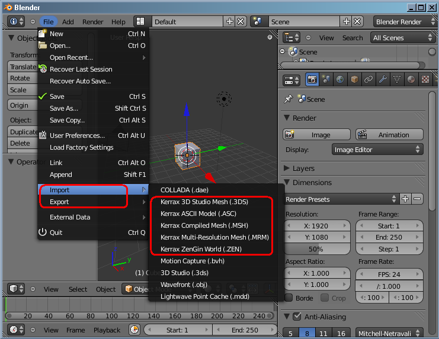

After installation you should to enable plugins. To perform it, select item "User Preferences" from the main menu (see the picture below).
The following window will appear.

Go to the "Addons" tab and ensure the following checkbox is checked. It's recommended also to set this settings as default settings (signed by blue).

To start one of these plugins, go to the File menu (see the picture below).
